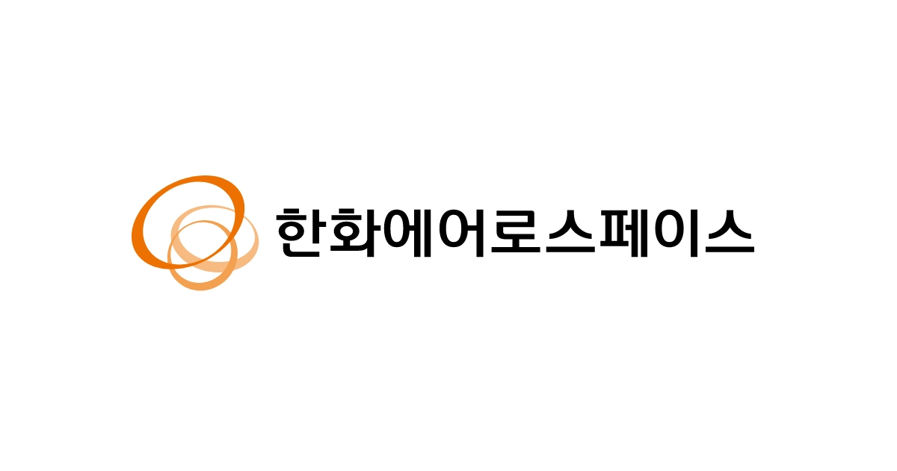
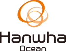
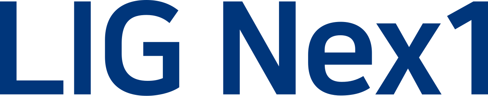

홈 > 브랜드 매거진 > 한화에어로스페이스
한화에어로스페이스
한화에어로스페이스(Hanwha Aerospace)는 항공기 엔진·우주발사체·지상방산을 주력으로 하는 한화그룹의 방위산업 핵심 기업이다.
산업 분야 브랜드·비즈니스 · 공개 등급 자료 기반 · 브랜드 평가 4.3 ★

한눈에 보는 브랜드
한화에어로스페이스는 1977년 삼성정밀공업으로 출발해 삼성항공산업, 삼성테크윈을 거쳐 2015년 한화그룹에 편입되고 2018년 현재 사명으로 전환한 국내 대표 항공우주·방산 기업이다. 두 번의 결정적 전환점은 2015년 한화로의 소유권 이전과 2018년 사명 변경으로 정체성을 항공우주·방산으로 명확히 한 것이다.
2025년 연 매출 26조 6,078억원, 영업이익 3조 345억원으로 역대 최대 실적을 기록하며 세계 100대 방산기업 24위에 올랐고, 지상방산과 항공우주를 양축으로 종합 방산기업으로 자리매김했다.
브랜드 관점
한화에어로스페이스의 가장 큰 차별점은 국내 유일의 항공엔진 제조 역량과 발사체부터 위성까지 이어지는 우주 밸류체인을 단독으로 보유했다는 점이다. KAI가 기체, LIG넥스원이 정밀유도 전자장비에 강점을 둔 것과 달리, 엔진·지상화력·우주를 모두 아우른다.
전략의 핵심은 지상방산이다. 2025년 지상방산 매출이 2년 만에 약 2배로 커져 8조 1,331억원, 영업이익 2조원을 처음 돌파했고 수주잔고만 37조 2,000억원에 수출 비중이 71%에 이른다.
K9 자주포와 천무를 앞세워 폴란드·노르웨이·에스토니아 등 유럽을 거점화하고, 현지 합작생산으로 안보 블록화 장벽을 뚫는 한편 중동·북미로 확장 중이다. 2024년 한화오션 편입은 지상·해양·우주를 잇는 종합 방산 포트폴리오를 완성한 분기점이다.
우크라이나 전쟁 장기화와 유럽 재무장이라는 지정학 흐름 속에서, 빠른 납기와 가격 경쟁력을 무기로 한국 방산 수출 성장의 선두에 서 있다.
시작과 성장
태생은 1977년 설립된 삼성정밀공업이다. 1987년 삼성항공산업으로 이름을 바꾸며 항공·정밀기계로 사업을 넓혔고, 2000년에는 삼성테크윈으로 전환해 항공엔진과 자주포 등 방산 플랫폼 역량을 축적했다.
그러나 글로벌 금융위기 이후 수익성이 흔들렸고 인수 직전 영업이익은 적자 상태였다. 첫 번째 전환점은 2014년 11월 삼성이 보유 지분 전량을 한화에 매각하기로 한 결정이다.
이듬해인 2015년 한화그룹은 삼성테크윈, 삼성탈레스 등을 약 2조원에 인수했고 6월 사명을 한화테크윈으로 바꿨다. 두 번째 전환점은 2016년 두산DST를 인수해 기동·대공·미사일 발사체계를 더하며 한화디펜스로 사업을 넓힌 것이다.
이어 2018년 한화에어로스페이스로 다시 이름을 바꾸며 항공우주·방산 정체성을 확립했고, 인수 10년 만에 영업이익이 수백 배로 불어나는 극적인 반전을 이뤄냈다.
브랜드 아이덴티티
브랜드의 시각 자산은 그룹 공통의 한화 트라이서클이다. 끊임없는 변화와 혁신으로 우주를 향해 팽창·성장하는 세 개의 원으로 구성되며, 핵심가치와 비전, 세 가지 사업 부문을 동시에 상징한다.
'Energy for Life'라는 브랜드 에센스 아래 역동적 에너지와 무한성장의 느낌을 전달하고, 대표색은 한화 오렌지로 백색 배경 위 구현을 원칙으로 한다. 추구 가치는 지속가능한 내일을 위한 끊임없는 도전이며, 목소리는 신뢰와 기술 자신감을 바탕으로 진중하고 단단하다.
타깃은 각국 정부와 군, 글로벌 방산 파트너로, 국가 안보를 책임지는 B2G 영역에 맞춰 절제되고 권위 있는 톤을 유지한다.
제품과 서비스
사업은 지상방산과 항공우주 두 축으로 나뉜다. 지상방산은 화력의 K9 자주포와 K10 탄약보급장갑차, 기동의 K21 보병전투차, 대공의 천마, 유도무기·탄약의 천무와 전술지대지를 아우른다.
항공우주는 국내 유일의 항공엔진 제조 역량을 바탕으로 T-50 훈련기와 수리온 헬기 엔진, 민항기 엔진 부품을 만들고, 누리호 액체로켓 엔진 등 발사체 핵심부품을 생산한다. 자회사 한화시스템(방산전자)과 한화오션(조선)을 통해 지상·해양·우주를 잇는다.
판매는 국가 간 정부 조달과 현지 합작생산을 중심으로 이뤄진다.
사람들
현재 상태
본사는 서울에 두고 대전 사업장과 R&D 캠퍼스 등을 운영한다. 모회사는 한화그룹의 지주 격인 한화이며, 한화에어로스페이스 자신은 한화시스템과 한화오션을 자회사로 둔다.
대표이사는 손재일 사장으로 2024년 3월 재선임됐다. 임직원 수는 미공개.
2025년 연간 매출은 26조 6,078억원, 영업이익은 3조 345억원으로 역대 최대였으며, 2025년 말 기준 지상방산 부문 수주잔고는 37조 2,000억원에 이른다. 자산 총계는 53조 8,246억원이다.
타임라인
정리된 연도형 이벤트가 없습니다.
BI/CI 변천사
함께 읽을 브랜드

브랜드·비즈니스 · 자료 기반한화오션한화오션(Hanwha Ocean)은 한화그룹 계열의 조선·방산 기업으로, 옛 대우조선해양을 2023년 한화가 인수해 사명을 바꿨다.
 브랜드·비즈니스 · 자료 기반두산
브랜드·비즈니스 · 자료 기반두산두산(Doosan Group)은 1896년 박승직 상점으로 출발한 한국 최고(最古)의 기업으로, 현재 발전설비·건설기계 등을 아우르는 복합기업이다.

브랜드·비즈니스 · 자료 기반LIG넥스원LIG넥스원(LIG Nex1)은 정밀유도무기·감시정찰·항공전자를 주력으로 하는 LIG그룹의 방위산업 전문기업이다.
 브랜드·비즈니스 · 자료 기반한화솔루션
브랜드·비즈니스 · 자료 기반한화솔루션한화솔루션(Hanwha Solutions)은 한화그룹 계열의 석유화학·신재생에너지 기업으로, 2020년 한화케미칼에서 사명을 바꿨다.
KI
한국투자증권
브랜드·비즈니스 · 자료 기반한국투자증권한국투자증권은 한국투자금융지주가 지분 전량을 보유한 핵심 자회사로, 뿌리는 1974년 국내 최초 투자신탁 전업사로 출범한 한국투자신탁에 닿아 있다. 2003년 한국투...
 브랜드·비즈니스 · 자료 기반키움증권
브랜드·비즈니스 · 자료 기반키움증권키움증권은 2000년 다우기술과 삼성물산 등이 출자해 키움닷컴증권으로 출범한 온라인 기반 증권사다. 2004년 코스닥, 2009년 유가증권시장에 상장했고 2006년...
 브랜드·비즈니스 · 자료 기반NH투자증권
브랜드·비즈니스 · 자료 기반NH투자증권NH투자증권은 2014년 우리투자증권과 NH농협증권의 합병을 거쳐 2015년 1월 공식 출범한 종합증권사다. 농협중앙회가 NH농협금융지주를 100% 보유하고 그 지주...
Me
Meander Valley
브랜드·비즈니스 · 편집 검수Meander ValleyMeander Valley는 2025년에 기록된 Designed by For the People 계열의 브랜드 아이덴티티 사례입니다. For The People가 아...